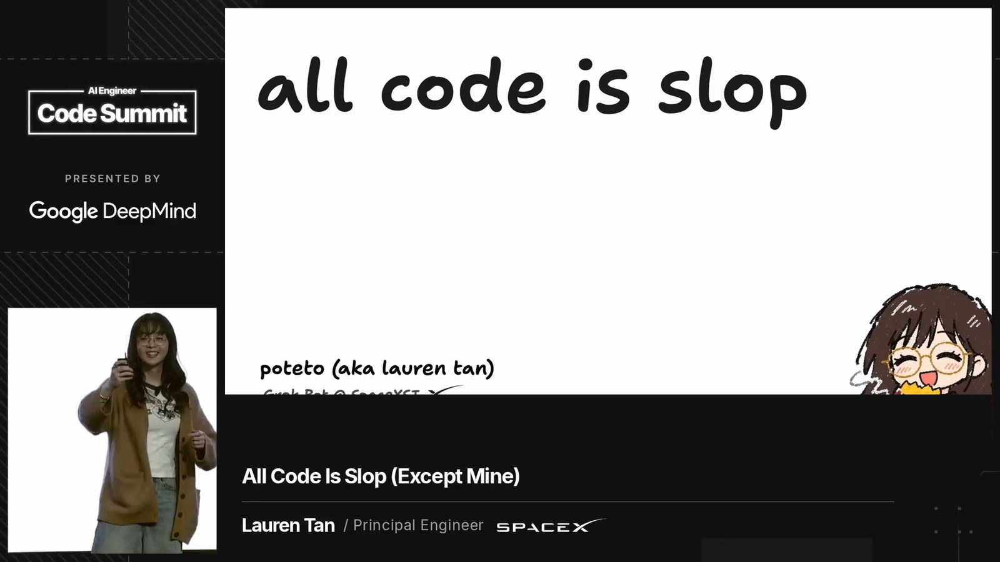
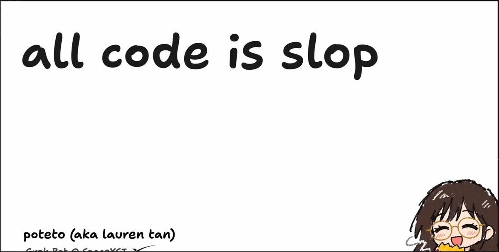
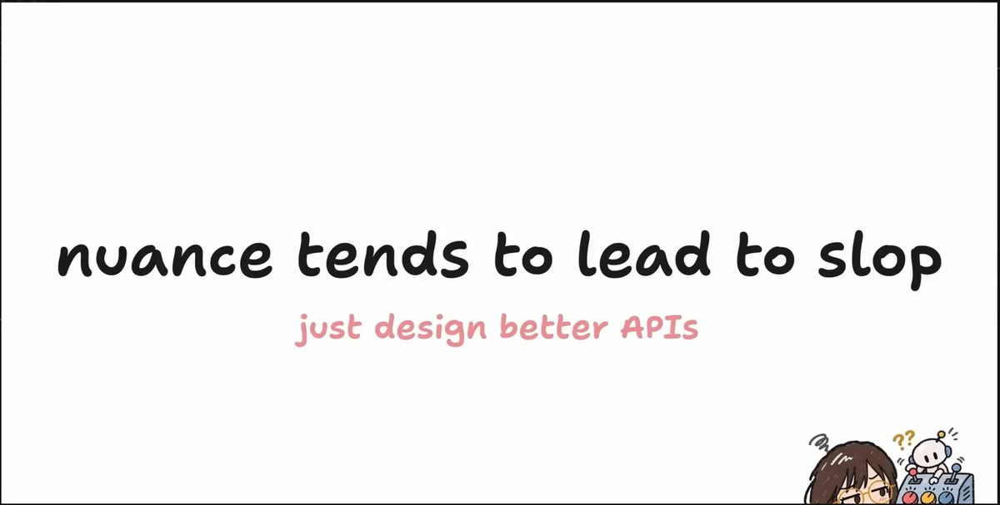
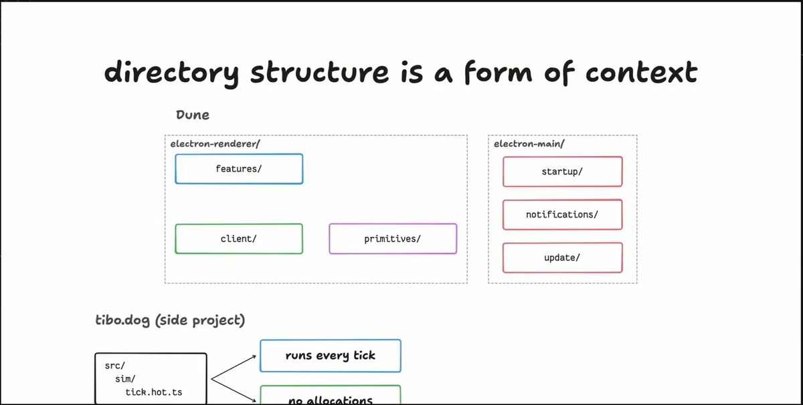
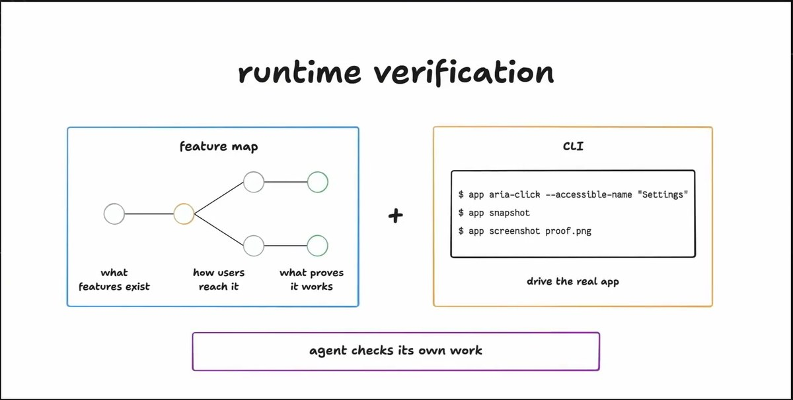

All Code Is Slop (Except Mine)
月11,000 PRを「ゴミ」にしない方法

Lauren Tan（poteto）は SpaceXAI の Principal Engineer で、AIチャットアプリ Grok Bot の開発を率いている。彼女のチームは先月、11,000件のPRを本番に出した。本人も3,000件を出している。
このページは、AI Engineer Code Summit での彼女の講演の要点を、講演で使われたスライドとともにまとめたもの。テーマは、エージェントに大量のコードを書かせながら、コードの品質をどう保ち、どう上げるかである。
- エージェントのミスを直すとき、プロンプトに言葉を足すのではなく、lint・型・API設計のような決定論的なチェックに落とし込む。
- 検証（実行・スクリーンショット・形式的検証）にトークンの約7割を使い、レビューは「検証の成果物を見る仕事」にする。
- 土台が整えば、月11,000 PRでもリバート率は約0.5%。自動化は土台のあと。
1. 問題設定：信頼をどう作るか0:00〜

エージェントの普及で、個人のコード生産量は大きく増えた。それに伴い、エンジニアの仕事の中心は、品質を維持・改善しながら生産性を上げる方法を見つけることに移っている。
彼女はこの課題を「ソフトウェアファクトリー」の問題ではなく、信頼の問題として扱う。対象は盲目的な信頼ではない。エージェントが正しいことをすると信頼できるよう、作業環境そのものに投資する。
彼女がその状態に到達するまでにかかった期間は6か月。ただし、道筋が分かれば短縮できるとしている。
2. 信頼の「potetoピラミッド」2:03〜

信頼を構成する層は、土台から順に次の5つ。
- codebase：API設計、アーキテクチャ、リファクタリング
- static analysis：lintルール、型、コンパイラ、テスト、CI
- verification：実行時検証と形式的検証
- prose：ルール文書、skills、AGENTS.md のような文章の指示
- human review：人間のレビュー
上の層ほどコストが高い。したがって方針は、決定論的に効く下の2層（codebase と static analysis）を厚くし、解釈で結果がぶれる prose の層を薄くすることになる。
エージェントの出力は入力で決まる。コードベースは、その最大の入力のひとつである。
3. Dune：問題をカテゴリーごと消す5:00〜

Dune は、Grok Bot のために作られたクライアントフレームワークである。デスクトップアプリ開発の教訓を、制約と lint ルールとして組み込んでいる。代表例は次の3つ。
- useEffect の禁止：誤用が多く、エージェントも使いこなせない。そのため製品コードでは禁止し、Dune の API 内部でのみ許可した。結果として、この種の問題は発生頻度が下がるのではなく、カテゴリーごと発生しなくなった。
- ディレクトリによる分離：electron-main と electron-renderer を分け、相互の import を依存グラフ解析と lint で禁止した。導入前は、エージェントがメインスレッドのコードをレンダラー側に import し、長時間タスクやカクつきの原因を作っていた。
- コメントの99%禁止：コメントは陳腐化しやすく、読まれず、強制力もない。さらにエージェントはコメントを、正しい実装をしない理由を書く場所として使う傾向がある。



タイマーを多用する場当たり的な修正が共有モジュールにコピーされて広がり、性能が悪化した事例がある。エージェントはその修正を正当化するコメントも書き添えていた。コメント禁止の背景には、この事例がある。
禁止の代わりに用意したのは、根本原因の修正を促す内容のエラーメッセージを出す lint ルールである。
4. 検証にトークンの7割を使う10:10〜

もうひとつの柱が検証である。基本は、エージェントにコードを自分で実行させ、開発者用デバッグツールで挙動を確認させること。
検証用のスキルには「feature map」が含まれる。これはユーザー視点で見た全機能の地図で、アプリの各部分を共通の語彙で指し示すために使う。検証手順にはカスタムCLIも用意し、毎回同じ手順で実行できるようにして、トークン消費を抑えている。
最近は形式的検証も導入した。TLA+ で通知などの主要フローをモデル検査し、Lean で自作の仮想化ライブラリを証明して、ちらつきやジッターがないことを確認する。プロパティベーステストも併用し、すでに複数のバグを検出している。
この結果、コードレビューの対象はコードそのものから、動画・スクリーンショット・図・形式的検証の結果といった検証の成果物へ移った。彼女の体感では、トークンの約70%が検証に使われている。
5. 成果：速度と安定性13:32〜


- チームは先月 11,000件のPR を本番に出し、安定版をほぼ毎日リリースしている
- PRを出す人は6月の15人から10月には227人に増えた。文脈の少ないカジュアルな寄稿者も含まれる
- この量でもリバート率は約0.5%で安定している
- 起動（-39%）、タイピング（中央値-26%、長文-65%）、チャット切替（-44%）など、体感性能も改善した
リリース時には、アプリ全体に対するファズテストも自動で実行される。実際のユーザーのようにアプリを操作してバグを探し、修正PRを作成して自動マージする仕組みである。
土台側の制約が効いているため、PRは初期状態から一定の品質を満たし、深い人間レビューはほとんど不要になっているという。
6. 結論：自動化は土台のあと15:11〜
すべてを自動化する「ソフトウェアファクトリー」を作る前に、まずコードベースを改善すべきだというのが結論である。
内側のコーディングループが slop を出す状態で自動化を進めると、出力される slop の量が増えるだけであり、トークンを大量に消費する高コストな仕組みになる。
先にコードベース・静的解析・実行時検証と形式的検証へ投資しておけば、その上に自動化の仕組みを構築することは比較的容易になる。
リンク
元動画：All Code Is Slop (Except Mine) — Lauren Tan（YouTube / AI Engineer）
話題のきっかけ：Alejo（@ecommartinez）の X 投稿
登壇者：Lauren Tan（@poteto）／ 彼女のプラグイン集 pstack：github.com/backnotprop/pstack
このページは講演の要点を独自にまとめたもので、逐語の書き起こしではありません。スライド画像は講演動画からのキャプチャです。講演の著作権は登壇者および主催者に帰属します。